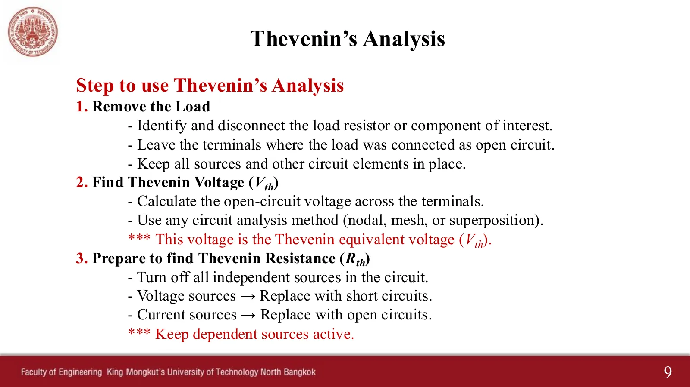
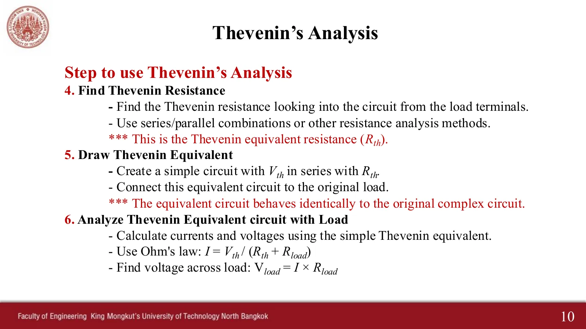
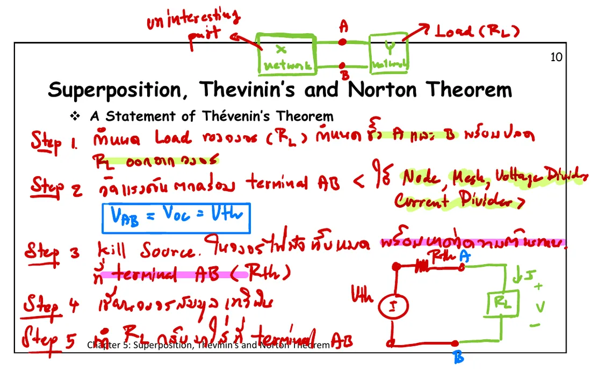
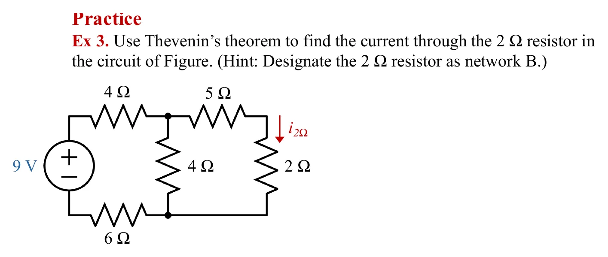
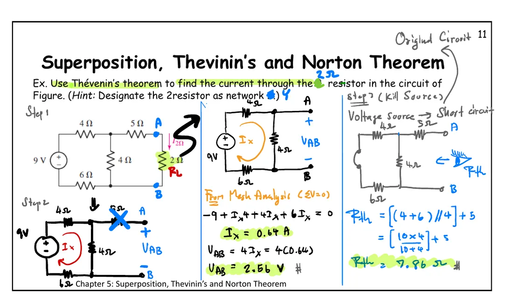
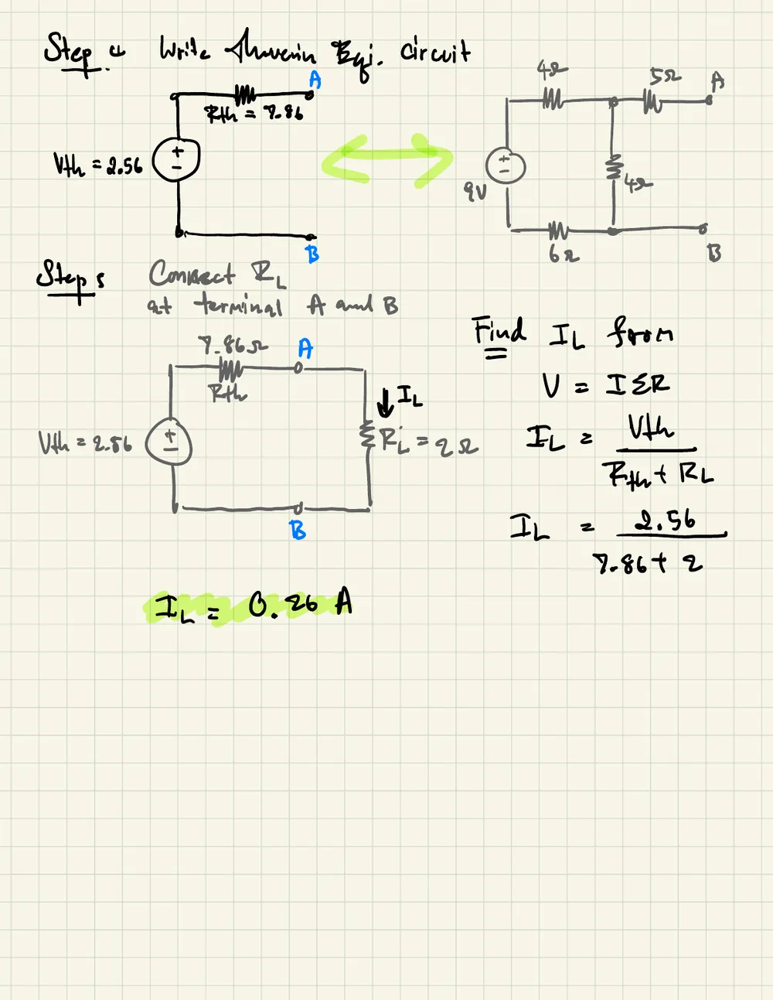
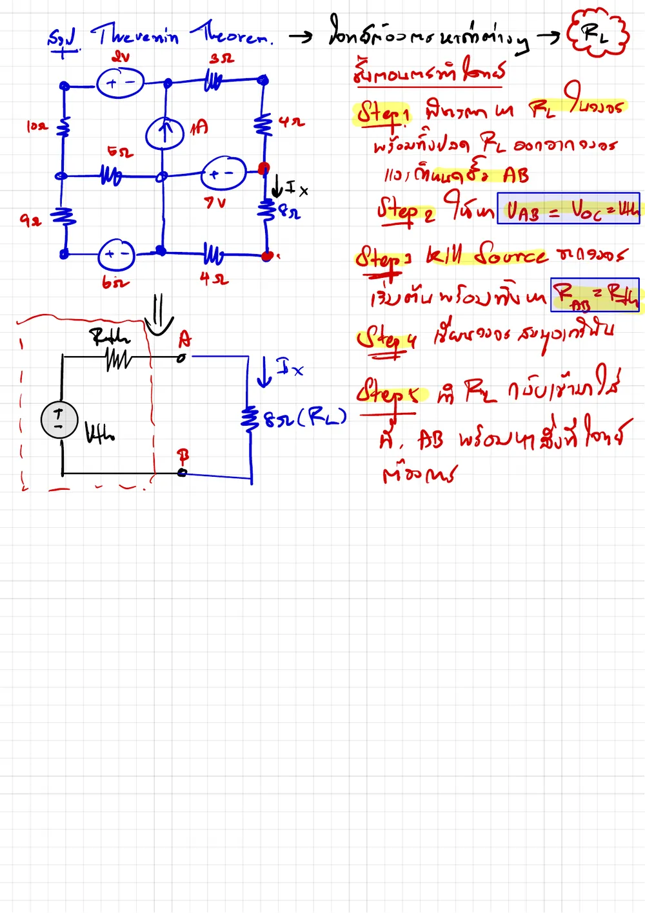
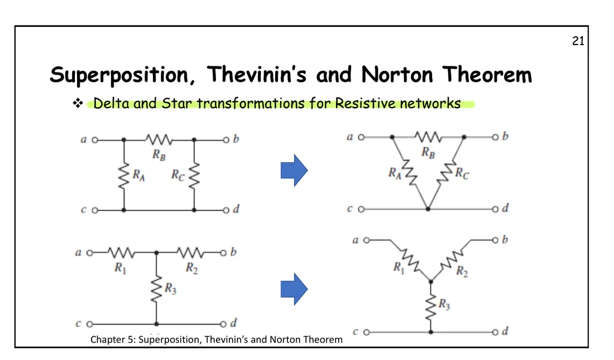
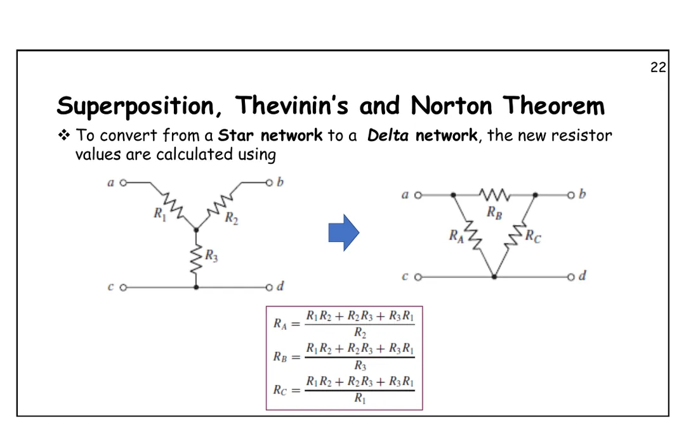
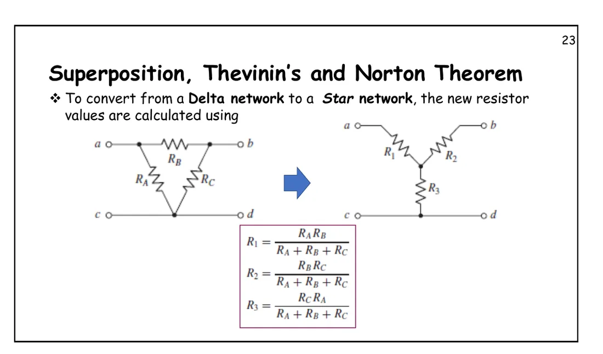

Slide p. 8: the "large, complicated and uninteresting" part of a circuit (network A) is replaced by a voltage source \(V_{th}\) in series with \(R_{th}\), and the load (network B) keeps exactly the same current, voltage and power. The calculation becomes quick, and it helps to choose the best load (page 5.4). Each problem's simulation follows the class steps: remove the load → read \(V_{oc}\) (the parts used glow) → kill the sources and look into AB (parts that drop out are crossed in red) → the equivalent → the load back on both the real circuit and the equivalent, to show the same current. This page has 4 problems, one after another (Ex 3 and exercises Ex.1, Ex.3, Ex.5), with simulations of the equivalence and of delta–wye conversion.
ได้วงจรสมมูลแล้ว เปลี่ยนโหลดกี่ค่าก็ใช้ \(I_L = V_{th}/(R_{th} + R_L)\) ได้เลย ไม่ต้องแก้ทั้งวงจรใหม่ \(V_{th}\) ที่ติดลบแปลว่าขั้ว A ต่ำกว่า B
Key points of this page
Any linear network seen from two terminals A–B can be replaced by \(V_{th}\) in series with \(R_{th}\); a load connected to it cannot tell the difference.
\(V_{th} = V_{oc}\): remove the load and find the voltage across the open terminals A–B, by any method (nodal, mesh, voltage divider).
\(R_{th}\): kill every independent source (voltage → short, current → open) and look into A–B using series–parallel, or delta–wye conversion for a bridge.
A resistor in series with an open circuit or in parallel with a short drops out of \(R_{th}\) at once (cross it out, as in class).
With the equivalent, any load value just needs \(I_L = V_{th}/(R_{th} + R_L)\), with no need to solve the whole circuit again. A negative \(V_{th}\) means terminal A is below B.
Six steps: (1) remove the load and mark the terminals, (2) find the open-circuit voltage at the terminals by any method, giving \(V_{th}\), (3) kill the independent sources, (4) find the resistance looking in from the terminals, giving \(R_{th}\), (5) draw the equivalent, \(V_{th}\) in series with \(R_{th}\), (6) reconnect the load and use \(I = V_{th}/(R_{th} + R_{load})\). In class the teacher used five steps, killing the sources and finding \(R_{th}\) in one step 3, as the simulations on this page do.

สไลด์หน้า 9 · แตะรูปเพื่อขยายSlide p. 9 · tap to enlarge

สไลด์หน้า 10 · แตะรูปเพื่อขยายSlide p. 10 · tap to enlarge
ดูห้าขั้นที่ผู้สอนเขียนในห้อง (พ.ศ. 2564)See the five steps as written in class (2021)

หน้า 10 ฉบับในห้อง: เครือข่าย X (ส่วนที่ไม่น่าสนใจ) กับเครือข่าย Y (โหลด) และห้าขั้นของเทวินินp. 10 in class: network X (the uninteresting part), network Y (the load), and the five Thévenin steps
1
Ex 3: ใช้ทฤษฎีบทของเทวินินหากระแสผ่านตัวต้านทาน 2 Ω
Ex 3: use Thévenin's theorem to find the current through the 2 Ω resistor
สไลด์บทที่ 5 หน้า 11 (ให้ 2 Ω เป็นเครือข่าย B คือโหลด) · Hayt Practice 5.6
Chapter 5 slides, p. 11 (the 2 Ω is network B, the load) · Hayt Practice 5.6

โจทย์จากสไลด์หน้า 11 · แตะรูปเพื่อขยายThe problem, slide p. 11 · tap to enlarge
ดูเฉลยที่ผู้สอนเขียนในห้อง (สองหน้า)See the teacher's in-class working (two pages)

หน้า 11: ขั้นที่ 1–3 ได้ \(V_{AB}\) = 2.56 V (ปัด \(I_x\) เป็น 0.64 A ก่อนคูณ) และ \(R_{th}\) = 7.86 Ωp. 11: steps 1–3 give \(V_{AB}\) = 2.56 V (with \(I_x\) rounded to 0.64 A first) and \(R_{th}\) = 7.86 Ω

ขั้นที่ 4–5: วงจรสมมูลแล้วต่อ 2 Ω กลับ ได้ \(I_L\) = 0.26 ASteps 4–5: the equivalent, then the 2 Ω back on: \(I_L\) = 0.26 A
A
โหลดค่าใดก็ได้กระแสเท่ากัน: ความสมมูลที่ขั้ว
The same current for every load: equivalent at the terminals
วงจรของข้อ 1 (Ex 3) กับวงจรสมมูลเทวินินของมัน
The circuit of problem 1 (Ex 3) and its Thévenin equivalent
Left is the real circuit of problem 1, right its Thévenin equivalent, both with the same \(R_L\). Slide \(R_L\) from short circuit to open circuit and watch the dots in both \(R_L\) always run at the same speed. The graph is the V–I line at terminals AB, one and the same straight line for both circuits: it crosses the voltage axis at \(V_{oc}\), the current axis at \(I_{sc}\), and its slope is \(-R_{th}\).
แบบฝึกหัดเพิ่มเติม (ชุด 5.2 Thévenin's and Norton's Theorems)
More practice (exercise sheet 5.2, Thévenin's and Norton's Theorems)
Ex.1, Ex.3 and Ex.5 ask for the Thévenin equivalent; Ex.2, Ex.4 and Ex.6 use the same circuits for the Norton equivalent (page 5.3), and Ex.7 asks for the maximum power (page 5.4).
ดูสรุปขั้นตอนของเทวินินที่ผู้สอนเขียนในไฟล์เฉลยSee the summary of the Thévenin steps in the solutions file

สรุปห้าขั้นของเทวินินในไฟล์เฉลยแบบฝึกหัด 5.2The five Thévenin steps in the solutions file of exercise sheet 5.2
Finding \(R_{th}\) sometimes runs into a bridge in which no two resistors are in series or in parallel. The way out is to convert a triangle (Δ) into a star (Y), which is equivalent as seen from its three corners. The simulation is Hayt Example 5.12: left is the bridge, right is after turning the upper Δ (1, 4, 3 Ω) into a Y. Note that the currents in the 2 Ω, the 5 Ω and the source stay the same. Change the three upper resistors with the sliders.

ฉบับในห้องหน้า 21 · แตะรูปเพื่อขยายIn-class p. 21 · tap to enlarge

ฉบับในห้องหน้า 22: สตาร์ → เดลตา · แตะรูปเพื่อขยายIn-class p. 22: star → delta · tap to enlarge

ฉบับในห้องหน้า 23: เดลตา → สตาร์ · แตะรูปเพื่อขยายIn-class p. 23: delta → star · tap to enlarge
Try this 1 — the load changes, the equivalent does not
In section A press "as given" (\(R_L\) = 2 Ω): both circuits give 0.2609 A, as Hayt does (260.8 mA).
Slide \(R_L\) to other values: with the real circuit you would solve again each time, with the equivalent only \(I_L = V_{th}/(R_{th} + R_L)\).
Press "open": the operating point sits at \(V_{oc}\) on the voltage axis; press "short": it sits at \(I_{sc}\) on the current axis.
Try this 2 — resistors that drop out of \(R_{th}\)
Problem 2 (exercise Ex.1), step 3: the top 1 kΩ is in series with the opened 4 A source, so it is crossed out, leaving 1 k ∥ 2 k.
Problem 4 (exercise Ex.5), step 3: the 15 Ω is in series with the opened 8 A and drops out too, giving \(R_{th}\) = (20 + 10) ∥ 30 = 15 Ω.
Problem 1 (Ex 3), step 2: the 5 Ω carries no current (open end), so it drops no voltage and \(V_{AB}\) equals the voltage across the middle 4 Ω.
Try this 3 — a negative \(V_{th}\), and delta–wye
Problem 2 gives \(V_{th}\) = −2669 V and problem 3 gives −0.8 V: terminal A is below B, so in the equivalent the + of \(V_{th}\) points down (or write 2669 V with the polarity turned round).
In section B press "Hayt values": \(R_{in}\) = 159/71 ≈ 2.239 Ω in both drawings. Then make the three upper resistors equal (e.g. 3, 3, 3 Ω) and the Y becomes 1, 1, 1 Ω (divide by 3).
Question: if the bridge is balanced (equal ratios of the side resistors), what current flows in the middle resistor? Find values that make its dots stop.
Chapter 5 slides, pp. 8–11 · in-class slides pp. 10–11, 21–23 · exercise sheet 5.2 Ex.1, Ex.3, Ex.5 and solutions · Hayt §5.3, §5.5, Practice 5.6, Example 5.12